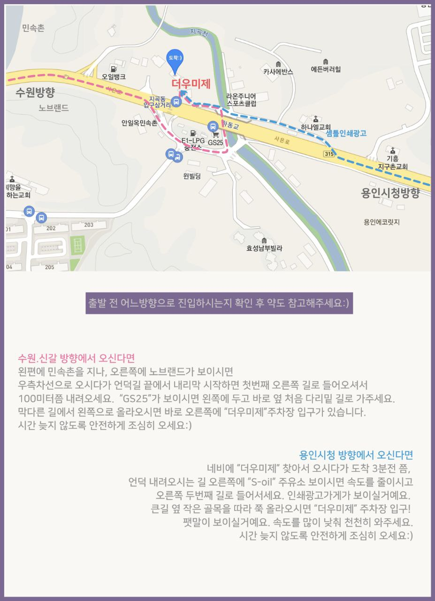
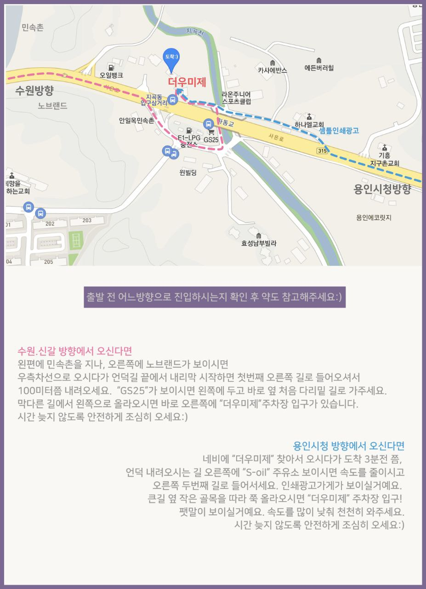

소원의 첫 돌
소원의 첫 돌을 위한 날입니다.
아래 안내드리는 더 우미제 스튜디오로 와주시면 감사하겠습니다.
- 일시 : 2023년 2월 25일 토요일 오후 4시 30분
- 장소 : 더 우미제 스튜디오
오시는 길
도착하는 방향에 따라 진입 방법이 다르니 아래 진입 시 참고사항을 꼭 확인해 주세요.
진입 시 참고사항

소원의 첫 돌을 위한 날입니다.
아래 안내드리는 더 우미제 스튜디오로 와주시면 감사하겠습니다.
도착하는 방향에 따라 진입 방법이 다르니 아래 진입 시 참고사항을 꼭 확인해 주세요.
